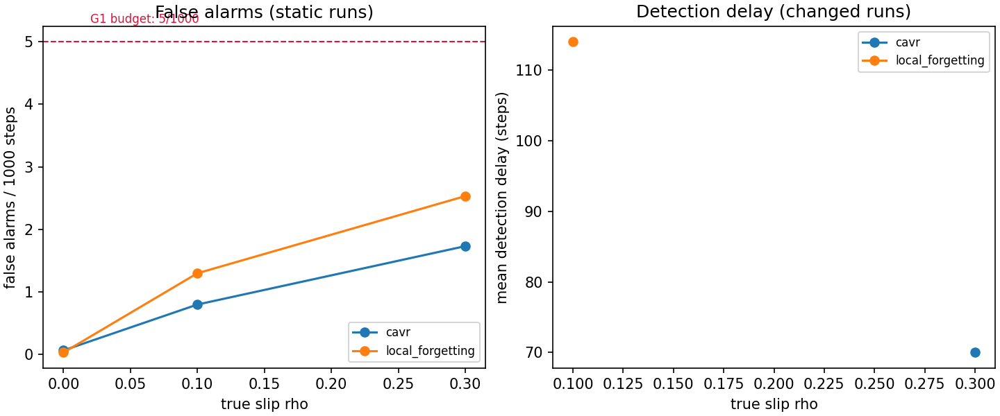

Left: false alarms per 1000 stationary steps vs slip ρ (dashed = G1 budget 5/1000). Right: mean detection delay on changed runs.
On stationary runs the calibrated CUSUM stays within budget at every slip level — 0.8 FA/1000 at ρ=0.1 rising to 1.5 at ρ=0.3, against the 5/1000 ceiling. On changed runs it localizes the break: mean detection delay ≈ 70 steps at ρ=0.3. Alarms are computed on the frozen pre-update prediction, so the detector cannot hide its own learning signal.